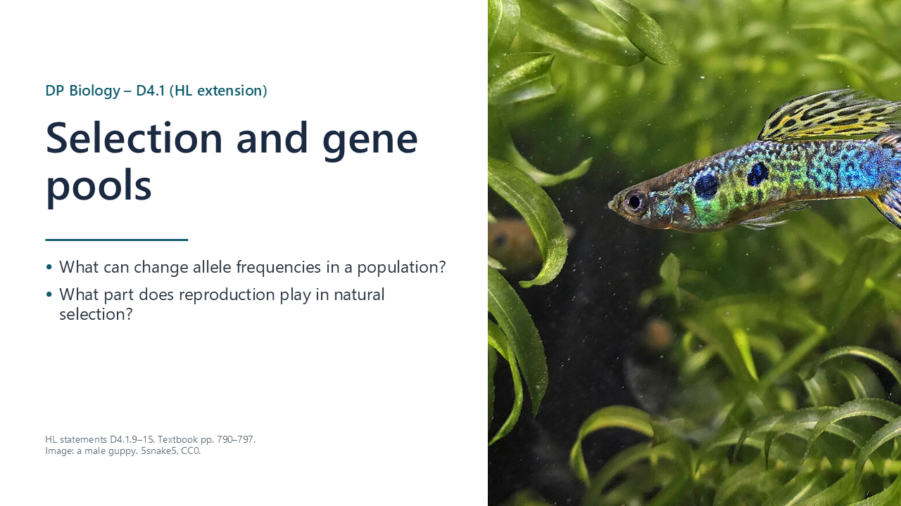
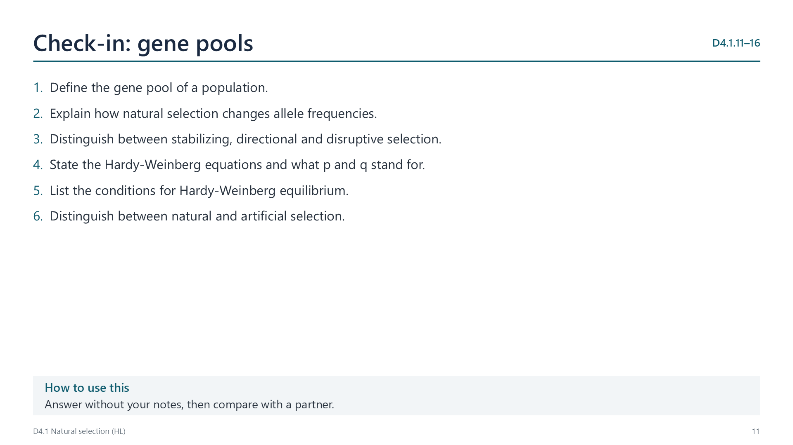
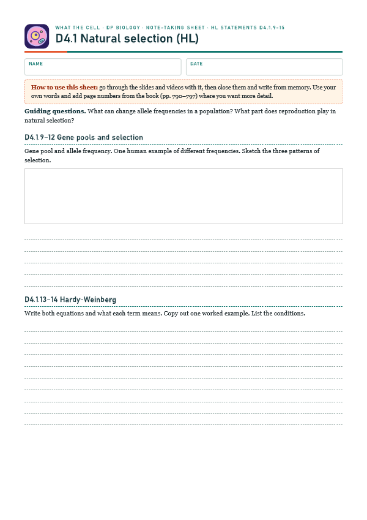
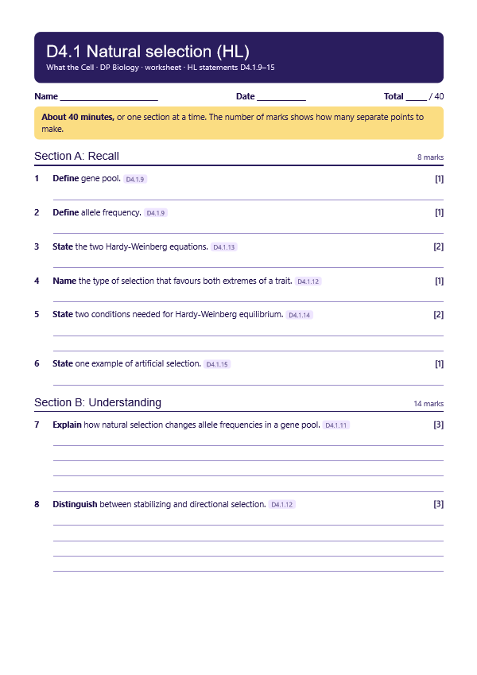

Gene pool
p. 790A gene pool is all the genes and alleles in an interbreeding population. Allele frequency is the proportion of all copies of a gene that are one allele. Evolution is a change in allele frequencies over generations.

Written for this site from the class slides, with textbook page references for each statement. The chapter is on pages 790–797 of the course textbook. Image credits are on slide 28.
A gene pool is all the genes and alleles in an interbreeding population. Allele frequency is the proportion of all copies of a gene that are one allele. Evolution is a change in allele frequencies over generations.
Separated populations differ in mutations, selection pressures and chance events. In humans, lactase persistence is common in northern Europe but rare in East Asia, while an ALDH2 variant, which causes alcohol flush, is common in East Asia.
Individuals with favourable heritable traits survive and reproduce more, so they pass on more copies of their alleles and those alleles rise in frequency.

Stabilizing selection favours intermediate phenotypes, directional favours one extreme and disruptive favours both extremes.
p + q = 1 and p2 + 2pq + q2 = 1. Start from the homozygous recessive frequency: q is its square root, then p = 1 − q, and carriers are 2pq.
Random mating, no selection, no mutation, no migration and a very large population. If observed frequencies do not fit, at least one condition is not being met.
People choose which individuals breed, to increase wanted traits in crops and domestic animals. Antibiotic resistance is an unintended result of human action, but it is natural selection.
Select a video to play it here. Select it again to close it.
Print this guide and complete it as you work through the slides and videos. It asks for your own explanations, so close the notes while you try each section.

The self-check needs JavaScript to run.
A printable worksheet covering all seven statements, from quick recall to data questions and a longer answer. It has 40 marks and takes about 40 minutes, or you can do one section at a time.
Your teacher has the mark scheme.

You will need: Two colours of beads, a bag, calculator
Safety: Keep beads off the floor to avoid slips.
Carry this out with your teacher's supervision and follow your school's lab rules.
The Hardy-Weinberg principle describes a population that does not really exist, yet it is useful for detecting when evolution is occurring.
Its assumptions are almost never met in nature. Consider how departures from an ideal can themselves be informative.
Predict first, then check. Each one opens on the Think deeper pages.
Summarised in our own words. Use each code to find the exact wording in your textbook or the IB subject guide.
© 2026 Akash Parthi Bendran. Please ask before using or sharing any resources from this site: see permission to use.